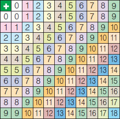

Ο διπλανός πίνακας δίνει τα αθροίσματα, δηλαδή τα αποτελέσματα της πρόσθεσης των μονοψήφιωνφυσικών αριθμών.
|
 |
Παρατηρούμε ότι κάθε φορά μπορούμε να προσθέσουμε δύο μόνο αριθμούς, συνεπώς από τα ζευγάρια των αριθμών που έχουν άθροισμα 12, δηλαδή 9+3, 8+4, 7+5, 6+6, εκείνο που έχει διαφορά 2 είναι το ζευγάρι των αριθμών 7 και 5.
Επίσης, παρατηρούμε ότι: 0+1=1+0=1, 0+2=2+0=2, 0+3=3+0=3, κ.ο.κ.
Η σύγκριση των αθροισμάτων 3+6=9 και 6+3=9, όπως και άλλων τέτοιων αθροισμάτων π.χ. 7+1=8 και 1+7=8 κ.λπ., μας οδηγούν στη διατύπωση της αντιμεταθετικής ιδιότητας.
Επίσης, η σύγκριση των αθροισμάτων: (5+4)+2=11 και 5+(4+2)=11, αλλά και άλλων αθροισμάτων, όπως π.χ. (9+1)+3=13 και 9+(1+3)=13 κ.λπ., μας οδηγούν στη διατύπωση της προσεταιριστικής ιδιότητας. Επομένως, μπορούμε να διατυπώσουμε τις ιδιότητες της πρόσθεσης και αντίστοιχα του πολλαπλασιασμού των φυσικών αριθμών.